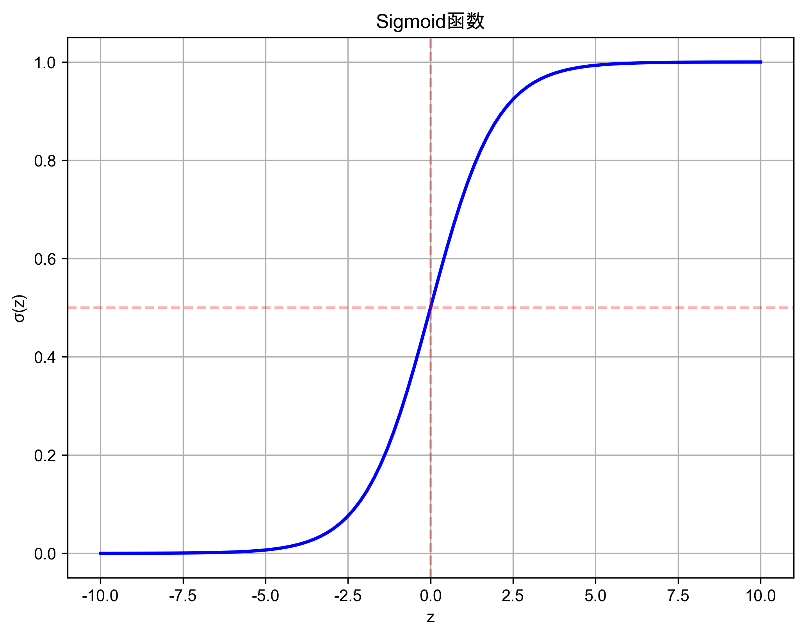
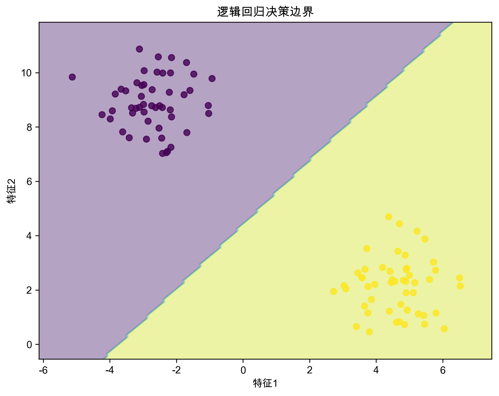
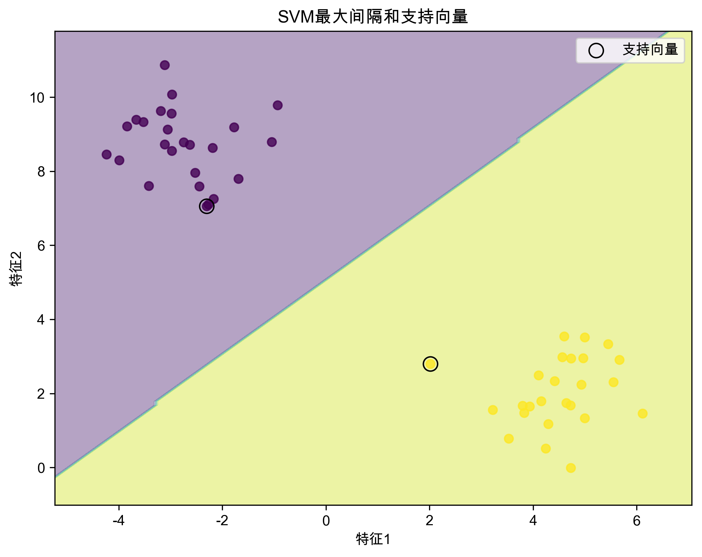
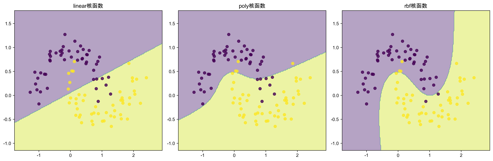
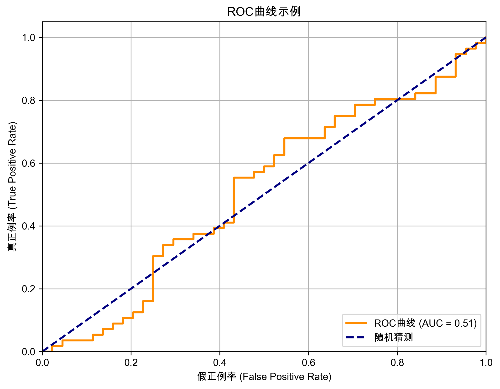

第三周：分类算法基础 (一) - 逻辑回归与支持向量机
本周学习目标
- 理解分类问题的基本概念和应用场景
- 掌握逻辑回归算法的原理、公式推导和
Scikit-learn实现 - 掌握支持向量机 (SVM) 算法的原理、核函数选择和
Scikit-learn实现 - 了解逻辑回归和 SVM 的优缺点和适用场景
- 掌握分类模型评估指标的计算和解读
- 了解模型选择与调优的基本方法
- 能够使用 AI 辅助编程工具完成分类模型的编程练习
- 开始小组项目一：电商用户行为分类模型构建
第一次课：分类算法 (一) - 逻辑回归与支持向量机 (SVM)
1. 分类问题概述
分类问题的定义与应用
分类问题的定义： 预测样本属于哪个类别 (离散值)。
分类问题的应用场景：
- 客户分类： 根据客户特征划分客户群体
- 风险预测： 预测用户是否会违约、交易是否为欺诈
- 垃圾邮件识别： 判断邮件是否为垃圾邮件
- 图像识别： 识别图像中的物体类别
- 文本分类： 将文本分为不同的类别
分类问题的类型
- 二分类： 类别只有两种 (是/否, 正/负, 0/1)
- 多分类： 类别多于两种 (例如：新闻分类、图像识别)
2. 逻辑回归 (Logistic Regression)
逻辑回归的原理
- 线性模型 + Sigmoid 函数： 逻辑回归本质上是一个线性模型，使用 Sigmoid 函数将输出映射到 (0, 1) 区间
- Sigmoid 函数： \(\sigma(z) = \frac{1}{1 + e^{-z}}\)

- 决策边界： 通过设定阈值 (通常为 0.5) 将概率值转换为类别标签

逻辑回归的公式
- 线性模型： \(z = w^T x + b\)
- 概率预测： \(p = \sigma(z) = \frac{1}{1 + e^{-(w^T x + b)}}\)
- 损失函数： 使用交叉熵损失函数进行模型训练
Scikit-learn 实现逻辑回归
import pandas as pd
from sklearn.model_selection import train_test_split
from sklearn.linear_model import LogisticRegression
from sklearn.metrics import accuracy_score, classification_report
# 加载电商用户行为数据集 (假设已预处理完成)
data = pd.read_csv('ecommerce_user_behavior_preprocessed.csv')
# 假设 'label' 列为分类目标变量，其他列为特征变量
X = data.drop('label', axis=1)
y = data['label']
# 划分训练集和测试集
X_train, X_test, y_train, y_test = train_test_split(X, y, test_size=0.2, random_state=42)
# 创建 LogisticRegression 模型
logreg_model = LogisticRegression(max_iter=1000)
# 训练模型
logreg_model.fit(X_train, y_train)
# 预测测试集
y_pred = logreg_model.predict(X_test)
# 评估模型
accuracy = accuracy_score(y_test, y_pred)
print(f"逻辑回归模型准确率: {accuracy:.4f}")
print("\n分类报告:\n", classification_report(y_test, y_pred))
逻辑回归的优缺点
优点：
- 模型简单，易于理解和实现
- 训练速度快
- 可解释性强，可以输出特征的权重系数
缺点：
- 只能处理线性可分或近似线性可分的数据
- 对特征之间的多重共线性比较敏感
- 容易欠拟合
3. 支持向量机 (Support Vector Machine, SVM)
SVM 的原理
- 核心思想： 努力找到一条线 (或者超平面)，尽可能完美地把两类数据分隔开来。
- 最大化间隔 (Margin Maximization)： SVM 不仅要分隔数据，还要让分隔线距离最近的数据点越远越好。这个”距离”就是间隔 (Margin)。
- 支持向量 (Support Vectors)： 在分隔线边缘，对分隔线位置起决定性作用的”关键”数据点。SVM 的名字就来源于它们。

简单来说，SVM 就像是在两种不同类型的物品之间划出一条尽可能宽的隔离带。隔离带越宽，模型就越稳健。
核函数 (Kernel Functions) - “核技巧” 的精髓
- 为什么需要核函数？ 当数据不是线性可分的时候，线性 SVM 就无法很好地工作。核函数 是一种强大的工具，它可以将数据隐式地映射到更高维的空间，使得原本线性不可分的数据在新空间中变得线性可分。这个过程被称为 “核技巧 (Kernel Trick)”。

“核技巧” 的核心思想： 与其显式地计算高维空间中的坐标，不如直接计算高维空间中两个向量的点积。而核函数就是用来高效计算这个点积的。
常用核函数： (以下核函数都实现了 “核技巧”，可以用于非线性 SVM)
- 线性核 (Linear Kernel)： \(K(x_i, x_j) = x_i^T x_j\)。 虽然名字叫 “核函数”，但线性核并没有升维，它等价于线性 SVM，直接在原空间计算点积。适用于线性可分的数据。
- 多项式核 (Polynomial Kernel)： \(K(x_i, x_j) = (\gamma (x_i^T x_j) + r)^d\)。 通过多项式的方式升维，可以处理一些非线性数据。
- RBF 核 (Radial Basis Function Kernel)： \(K(x_i, x_j) = \exp(-\gamma ||x_i - x_j||^2)\)。 也叫高斯核，是最常用的核函数之一。它可以将数据映射到无限维空间，非常灵活，能处理各种复杂形状的数据分布。
- Sigmoid 核 (Sigmoid Kernel)： \(K(x_i, x_j) = \tanh(\gamma (x_i^T x_j) + r)\)。 类似于神经网络中的 Sigmoid 激活函数，也常用于非线性分类。
选择核函数的简单原则：
- 对于线性可分的数据，线性核是首选，因为它最简单高效。
- 对于非线性可分的数据，RBF 核 通常是默认的 “万金油”，因为它适用性广，效果通常不错。
- 可以尝试多项式核和 Sigmoid 核，但通常 RBF 核更常用且效果更好。
- 实际应用中，可以通过交叉验证等方法来选择最佳的核函数和参数。
总结： 核函数是 SVM 处理非线性数据的关键。通过 “核技巧”，我们可以在不显式进行高维映射的情况下，利用核函数高效地完成非线性分类。当你使用非线性核函数 (如 RBF 核) 时，SVM 实际上是在高维空间中寻找最优超平面，但所有的计算都可以在原始特征空间中通过核函数完成。
Scikit-learn 实现 SVM
import pandas as pd
from sklearn.model_selection import train_test_split
from sklearn.svm import SVC
from sklearn.metrics import accuracy_score, classification_report
# 加载电商用户行为数据集 (假设已预处理完成)
data = pd.read_csv('ecommerce_user_behavior_preprocessed.csv')
# 假设 'label' 列为分类目标变量，其他列为特征变量
X = data.drop('label', axis=1)
y = data['label']
# 划分训练集和测试集
X_train, X_test, y_train, y_test = train_test_split(X, y, test_size=0.2, random_state=42)
# 创建 SVM 模型 (使用 RBF 核)
svm_model = SVC(kernel='rbf', C=1.0, gamma='scale')
# 训练模型
svm_model.fit(X_train, y_train)
# 预测测试集
y_pred = svm_model.predict(X_test)
# 评估模型
accuracy = accuracy_score(y_test, y_pred)
print(f"SVM 模型准确率: {accuracy:.4f}")
print("\n分类报告:\n", classification_report(y_test, y_pred))
SVM 的优缺点
优点：
- 在高维空间和复杂数据集上表现优秀
- 泛化能力强，不容易过拟合
- 可以使用核函数处理非线性数据
缺点：
- 训练速度较慢，特别是对于大规模数据集
- 参数调优比较复杂
- 模型可解释性较差
- 对缺失值和特征缩放敏感
4. 模型评估指标
评估指标概述
- 混淆矩阵： 展示分类模型预测结果的矩阵 (TP, TN, FP, FN)
- 准确率：
(TP + TN) / (TP + TN + FP + FN) - 精确率：
TP / (TP + FP) - 召回率：
TP / (TP + FN) - F1-score：
2 * (Precision * Recall) / (Precision + Recall)
AUC-ROC
- ROC 曲线： 以假正例率为横轴，真正例率为纵轴的曲线
- AUC 值： ROC 曲线下的面积，值越大表示模型性能越好

5. 模型选择与调优
常用方法
- 交叉验证： K 折交叉验证，用于更可靠地评估模型性能
- 网格搜索： 遍历参数组合，选择性能最佳的参数
小组项目一：电商用户行为分类模型构建
项目概述
项目目标： 基于预处理后的电商用户行为数据，构建用户分类模型。
项目任务：
- 数据准备： 使用预处理后的数据集
- 模型选择： 选择逻辑回归或 SVM 算法
- 模型训练： 使用训练集训练模型
- 模型评估： 计算并分析评估指标
- 模型调优： 使用交叉验证和网格搜索
- 撰写报告： 记录实验过程和结果
提交要求
- Python 代码 (含完整注释)
- 实验结果报告 (包括项目背景、步骤、分析等)
评分标准： 模型选择合理性、代码规范性、评估完整性、分析深入程度
第二次课：小组项目一实践
课程安排
- 学生分组进行项目实践
- 教师巡回指导，解答问题
- 完成项目代码和报告初稿
课后作业
- 完善项目代码和实验报告
- 课前提交完整成果
- 预习下周课程：决策树与集成学习
相关资源